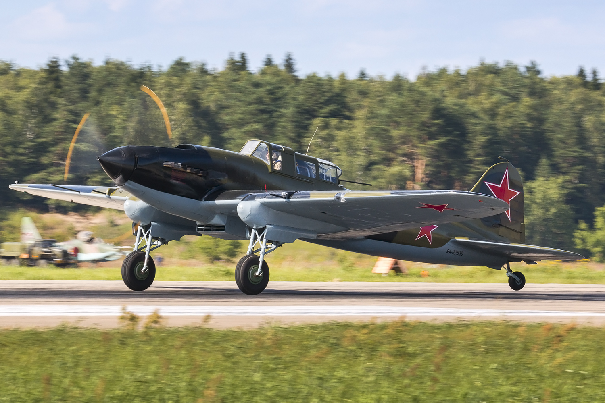

About the Il-2
The Ilyushin Il-2 was a Soviet ground-attack aircraft, produced more than any other military aircraft in aviation history.
The Ilyushin Il-2 was a Soviet ground-attack aircraft, produced more than any other military aircraft in aviation history.